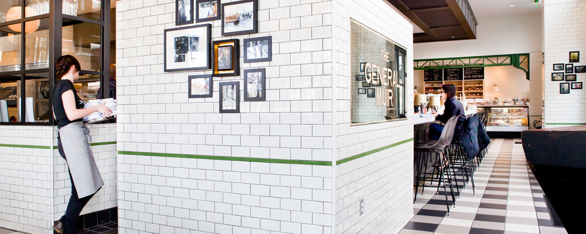

Our Story
The General Muir, established in January 2013 at Emory Point, is a modern American restaurant inspired by classic New York Jewish Deli, returning it to its hand-crafted roots. Traditional favorites are honored — pastrami is cured and smoked in house, bagels are hand rolled and kettle boiled — and joined by dishes going beyond tradition, focusing on fresh ingredients and simple preparations. A second location in Sandy Springs opened in 2021.
The restaurant is named for the refugee transport ship that brought co-owner Jennifer Johnson's mother and grandparents, Holocaust survivors, to New York in 1949. Read more about the origin of our name and see the video by Atlanta Magazine below.
The General Muir serves breakfast, lunch, and weekend brunch at both locations, plus dinner at the Emory location, and offers an espresso bar serving locally-roasted Dancing Goats coffee as well as a full bar of wine, beer, spirits, and cocktails. Next door to the original Emory location, you’ll find TGM Bread and TGM Soup Co. pairing fresh baked breads and soups for a quick lunch, as well as loaves to take home. TGM Bread bakes all of the bread daily for both locations, the rest of the Rye Restaurants family, and many other restaurants around town.
The Partners
The General Muir is owned by Jennifer and Ben Johnson, Shelley Sweet, and Chef Todd Ginsberg, who also partner on Fred's Meat & Bread and Yalla in Krog Street Market and Wood's Chapel BBQ in the historic Summerhill neighborhood of Atlanta — the Rye Restaurants family of restaurants.
The Johnsons, husband and wife, opened West Egg on Atlanta’s Westside in 2004. Both Jennifer (our "office girl") and Ben (fondly referred to as "errand boy," although Renaissance man is more like it!) are former attorneys who practiced law in Atlanta for nearly 7 and 11 years, respectively, before embarking on a second career in hospitality. West Egg proudly celebrates its 20th anniversary in 2024.
Shelley Sweet found her passion for the restaurant industry after graduating college and working in graphic design, beginning her restaurant career at West Egg when it opened in 2004. She joined the Concentrics Restaurant Group in 2006, serving as a manager at Two Urban Licks, Assistant General Manager at Murphy’s, and ultimately as General Manager of TAP from 2008 to 2010. She was the opening General Manager at Hugh Acheson’s Empire State South. Coming full circle, Shelley rejoined West Egg in 2011 as General Manager, becoming a partner in 2014. Shelley, Jennifer, and Ben continue to partner on West Egg, with Chef Andrew Smith. Shelley is a member of Les Dames d’Escoffier International, Atlanta Chapter, and recently served on the Georgia Restaurant Association Board of Directors.
Todd Ginsberg is a 2014 and 2015 James Beard Foundation Semifinalist for Best Chef, Southeast and a graduate of the Culinary Institute of America at Hyde Park, New York. He started his career at The Dining Room at The Ritz-Carlton in Atlanta under Joel Antunes and Bruno Menard, led the kitchens at Asher in Roswell, Georgia, and Madison's in Highlands, North Carolina, and spent time at Lucas Carton in Paris and at Alain Ducasse in New York. Upon his return to Atlanta, he worked for the Concentrics Restaurants group, serving as chef at both TAP and Trois. Todd was the chef at Bocado from its opening in 2009 until partnering with Shelley, Jennifer, and Ben to open The General Muir.
In 2014 the Georgia Restaurant Association honored Jennifer, Ben, Shelley and Todd as Restaurateurs of the Year and, in 2018, StarChefs recognized them as Rising Star Restaurateurs